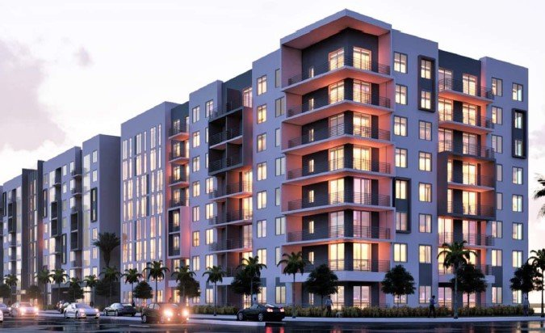
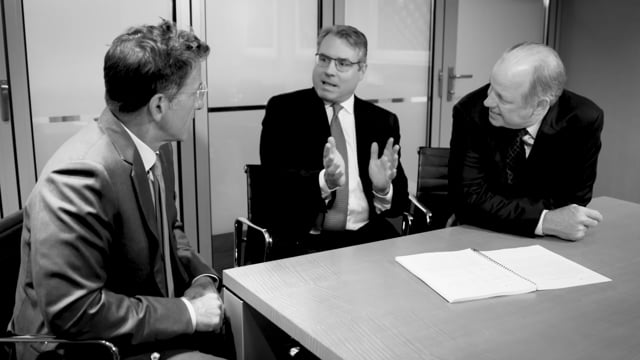

Relationship
Long-term, value-added.
Borrowers and partners are supported from origination through asset management and exit.
Commercial real estate credit platform
Issue 01 / Institutional Credit / North America
3650 originates, structures, services, and safeguards commercial real estate loans across the full property life cycle. The platform stays visible from the first conversation through servicing continuity after close.

Operating model
Vertically integratedServicing posture
Retained servicingPhysical presence
Five offices3650 stance
One lender. Wholly committed. Relationship and service stay connected to the loan instead of being handed off to separate systems.Why the platform matters
Relationship
Borrowers and partners are supported from origination through asset management and exit.
Platform
Sourcing, underwriting, closing, and servicing stay inside one internal process.
Range
Stable cash flow, opportunistic lending, and special situations are all visible on the public site.
Hear from our founders
Hear from the founders about 3650’s relationship and service-based approach. It is the driver for customer-centric outcomes that support borrowers and sponsors as they grow cash flow and the value of their properties.
Watch founder video
PlayPlatform at a glance
Lead transaction
A $64.3 million senior construction loan in Dania Beach, Florida, tied to a visible asset and a clearly underwritten development plan.
Real estate credit solutions
3650 specializes in credit solutions for acquisition, development, repositioning, recapitalization, and refinancing transactions.
Special situations
Broken capital structures, loan purchases, and value-add business plans across North America and asset classes.
Institutional read
The public 3650 content is already strongest when it shows alignment: the ethos explains the relationship model, the culture explains the service standard, and leadership explains why the platform can actually execute that promise.
Our ethos
The business philosophy hinges on the strength of relationships between lenders, partners, and borrowers.
Our culture
Predictable processes, high expectations, and readiness to respond efficiently as property and market conditions evolve.
Leadership
Cross-discipline experience across debt, equity, development, repositioning, leasing, and property management.